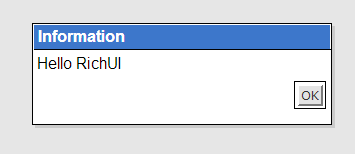

DevOn RichUI는 순수 HTML 표준 기술을 사용해 기존 Plug-in기반 X-Internet 도구들의 기능들을 제공하는 B2B용 Cross Browsing/Platform Rich UI 솔루션입니다.
RichUI를 사용하기 전에 먼저 몇가지 RichUI의 특징들을 살펴본 후 "Hello RichUI"를 출력해보도록 하겠습니다.
그럼 Hello RichUI를 시작해 보도록 하겠습니다.
RichUI는 5개의 기본 라이브러리를 제공합니다.
위 5개의 라이브러리를 페이지마다 반드시 모두 사용할 필요는 없습니다. 페이지에서 사용하는 RichUI의 기능들에 따라 선별하여 사용하기 바랍니다.
지금 만들어볼 Hello RichUI는 간단히 Dialog에 "Hello RichUI" 메시지를 출력하는 것입니다. 따라서 위 5개의 라이브러리 중 3개만 추가하여 사용하겠습니다.
<!DOCTYPE html> <html> <head> <meta http-equiv="Content-Type" content="text/html; charset=utf-8" > <title>Hello RichUI</title> <script type="text/javascript" src="/rui/js/rui_base.js"></script> <script type="text/javascript" src="/rui/js/rui_core.js"></script> <script type="text/javascript" src="/rui/js/rui_ui.js"></script> </head> <body> </body> </html>
이쯤이면 이미 예상하셨죠?
RichUI가 제공하는 수많은 기능들은 제각각의 용도에 따라 단계적으로 추가해야 할 라이브러리 파일들에 나누어져 배치되어 있습니다.
"Hello RichUI"를 출력하는데는 rui_ui.js 까지의 3개 라이브러리만 필요하므로 rui_form.js와 rui_grid.js는 추가할 필요없습니다.
예를 하나 들어보겠습니다. rui_base.js의 대표적 기능으로는 DOM Selector인 Rui.select()라는 기능이 있습니다.
이는 document.getElementById(), document.getElementsByTagName()등과 같이 DOM을 찾을때 사용하는 기능인데,
아무래도 이런 기본적인 기능은 rui_base.js에 들어가 있어야 맞겠죠.
아래 표를 통해 rui_base뿐 아니라 rui_core, rui_ui는 각각 어떤 기능들이 배치되어 있는지 확인하기 바랍니다.
| 라이브러리 | 기능 | 설명 |
|---|---|---|
| rui_base.js |
|
rui_base.js에는 가장 기본적인 기능들을 제공합니다. DOM을 찾고, 서버로부터 비동기 데이터를 받아오며, 디버깅을 위해 로그를 찍을 수 있고, 날짜의 포맷을 변경하거나, 때로 문자열이 빈 문자열인지 검사합니다. 또한 DOM 이벤트 또는 사용자 이벤트의 관리 기능들도 기본적으로 제공합니다. |
| rui_core.js |
|
rui_core.js에는 부가적으로 확장된 기능들입니다. javascript 기본 객체인 String, Number, Date 객체들의 prototype을 확장하여 제공하고 있으며, DOM에 class를 추가하고 style을 부여하며, 크기도 조정합니다. 애니메이션 효과를 부여하여 다이나믹한 페이지를 만들거나 마우스로 드래그하여 값을 옮길 수도 있습니다. 특히 DataSet은 데이터 핸들링을 위한 RichUI의 가장 중심이 되는 컴포넌트입니다. |
| rui_ui.js |
|
rui_ui.js 에는 UI에 대한 컴포넌트들이 배치되어 있습니다. Button과 Panel, 달력 등 UI와 관련된 기본적인 기능들이 포함되어 있으며, 이들은 앞으로 경험하게 될 다양한 UI 컴포넌트들의 상위클래스가 되기도 합니다. |
3개를 설명 드렸는데 혹시 5개의 라이브러리들의 모습이나 용도가 머릿속에 대략 그려지지지 않더라도 지금은 그냥 가볍게 넘겨도 좋습니다.
표 앞에 말씀드린대로 "Hello RichUI"는 Dialog를 이용하여 출력하기로 하였지요? 표를 보면 rui_ui.js에 Rui.ui.LSimpleDialog가 포함되어 있습니다. 이제 직접 출력해보도록 하겠습니다.
우선 Dialog를 살펴보도록 하겠습니다.
RichUI의 Dialog는 LDialog와 LSimpleDialog 두가지가 제공됩니다.
LDialog는 LPanel을 상속받고 있고 LSimpleDialog는 LDialog를 상속받고 있습니다.
LSimpleDialog는 사용자에게 간단한 메시지를 전달하고 단순한 응답을 받아야 할 때 사용하는 기능입니다.
비슷한 사용 예제로는 쉽게 alert() 이나 confirm()을 떠올려 보면 됩니다.
그럼 "Hello RichUI"를 Dialog에 출력 할텐데, LSimpleDialog를 직접 사용하지 않고 alert()과 같이 쉽게 사용할 수 있도록 제공되는 RichUI의 alert() 기능을 이용해보겠습니다.
바로 Rui.alert() 입니다. 이 기능은 LSimpleDialog를 보다 쉽게 사용할 수 있도록 구현한 것입니다.
<!DOCTYPE html>
<html>
<head>
<meta http-equiv="Content-Type" content="text/html; charset=utf-8" >
<title>Hello RichUI</title>
<script type="text/javascript" src="/rui/js/rui_base.js"></script>
<script type="text/javascript" src="/rui/js/rui_core.js"></script>
<script type="text/javascript" src="/rui/js/rui_ui.js"></script>
<link type="text/css" rel="stylesheet" href="/rui/resources/rui.css"/>
<script type="text/javascript">
Rui.onReady(function(){
Rui.alert('Hello RichUI');
});
</script>
</head>
<body>
</body>
</html>

드디어 Hello RichUI가 출력되었습니다~! 코드를 보면 크게 세 가지가 추가되었습니다.
Rui.alert()을 배웠으니 몇가지 응용을 해보기로 하겠습니다.
<script type="text/javascript">
Rui.onReady(function(){
Rui.alert('Are you Chrome? : ' + (Rui.browser.chrome ? 'Yes' : 'No'));
});
</script>
Rui.browser라는 객체를 통해 브라우저 종류를 알 수 있습니다. 물론 navigator.userAgent 를 이용해도 됩니다.
<script type="text/javascript">
Rui.onReady(function(){
Rui.confirm({
text: 'Please. Help me',
handlerYes: function() {
Rui.alert('Thank you.');
},
handlerNo: function() {
Rui.alert('I hate you.');
}
})
});
</script>
Rui.confirm()을 사용해 봤습니다. 상단의 코드 보다는 코드가 조금 더 복잡해졌습니다.
Rui의 대부분의 기능들은 JSON을 이용합니다.
언뜻 복잡해 보이지만 JSON의 구조를 이해한다면 쉽게 사용할 수 있으리라 생각합니다.